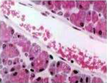
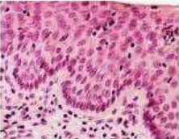
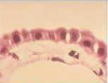
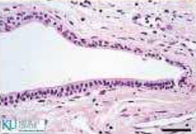
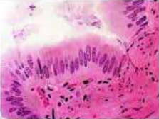
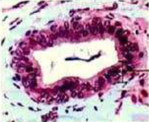
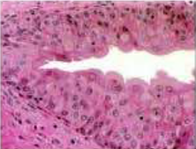
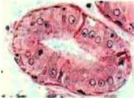

JARINGAN EPITEL
DEFINISI
Jaringan epitel adalah salah satu empat jaringan dasar (lainnya: jaringan penyambung, jaringan otot, jaringan saraf). Dahulu istilah epitel digunakan untuk menyebut selaput jernih yang berada di atas permukaan tonjolan anyaman penyambung di merah bibir (Epitel: Epi di atas; Thele bibir). Istilah ini kini digunakan untuk semua jaringan yang melapisi sesuatu struktur dan saluran.
Seperti jaringan epidermis pada tumbuhan, jaringan epitel berperan sebagai pelapis organ dan rongga tubuh bagian luar. Jaringan ini dapat ditemukan pada permukaan tubuh yang membatasi organ tubuh dengan lingkungan luarnya. Jaringan epitel yang melapisi permukaan tubuh atau lapisan luar tubuh dinamakan epitelium.
Sedangkan jaringan epitel yang membatasi rongga tubuh dinamakan mesotelium, misalnya perikardium, pleura, dan peritonium. Kemudian, jaringan yang membatasi organ tubuh dinamakan endotelium. Di dalam struktur tubuh, jaringan epitel berfungsi sebagai pelindung jaringan di bawahnya dari kerusakan, pengangkut zat-zat antarjaringan, dan tempat keluarnya enzim.
Berdasarkan strukturnya, jaringan epitel dibedakan menjadi 3 macam, yaitu epitel pipih, epitel batang (silinder), dan epitel kubus. Kita bisa membedakan ketiga jaringan epitel tersebut berdasarkan ciri-cirinya. Epitel pipih memiliki ciri yakni selnya berbentuk pipih dengan nukleus bulat di tengah. Epitel batang (silinder) tersusun oleh sel berbentuk seperti batang dengan nukleus bulat di dasar sel. Sedangkan epitel kubus memiliki sel berbentuk kubus dengan nukleus bulat besar di tengah.
Menurut lapisan penyusunnya, jaringan epitel terbagi atas beberapa jaringan, yakni epitel pipih selapis, epitel pipih berlapis banyak, epitel silindris selapis, epitel silindris berlapis banyak, epitel kubus selapis, epitel kubus berlapis banyak, dan epitel transisi. Kalian dapat memahaminya dengan memerhatikan ulasan berikut.
JENIS-JENIS JARINGAN EPITEL
| Jenis-Jenis Jaringan Epitel | |||
|---|---|---|---|
| 1. | |||
|  | |||
| Nama | Epitel Silindris Selapis | ||
| Letak | Pembuluh darah dan limfa, kapsul glomerulus, alveolus, selaput bagian dalam telinga, saluran ekskresi kecil dari kebanyakan kelenjar, peritoneum, dan pelura | ||
| Fungsi |
|
||
| 2. | |||
|  | |||
| Nama | Epitel Pipih Berlapis | ||
| Letak | Epidermis, vagina, esophagus, ujung distal, uretra, rongga mulut, dan hidung | ||
| Fungsi |
|
||
| 3. | |||
|  | |||
| Nama | Epitel Kubus Selapis | ||
| Letak | Permukaan dalam lensa mata, kelenjar tiroid, saluran nefron ginjal permukaan luar ovary atau indung telur, epitel berpigmen dari retina mata | ||
| Fungsi |
|
||
| 4. | |||
|  | |||
| Nama | Epitel Kubus Berlapis | ||
| Letak | Saluran kelenjar keringat, dan minyak di kulit, serta epitel pada indung telur dan testis | ||
| Fungsi |
|
||
| 5. | |||
|  | |||
| Nama | Epitel Silindris Selapis | ||
| Letak | Lambung, jonjot usus, kelenjar pencernaan, kantong empedu, rahim, dan saluan rahim, serta saluran pernafasan bagian atas | ||
| Fungsi |
|
||
| 6. | |||
|  | |||
| Nama | Epitel Silindris Berlapis | ||
| Letak | Bagian mata yang bewarna putih, dinding dalam kelopak mata, laring, langitlangit, mulut yang lunak, hulu faring, kelenjar susu, serta kelenjar uretra | ||
| Fungsi |
|
||
| 7. | |||
|  | |||
| Nama | Epitel Transisi | ||
| Letak | Saluran urine, saluran reproduksi jantan, saluran pernafsan, dan rongga hidung | ||
| Fungsi |
|
||
| 8. | |||
|  | |||
| Nama | Epitel Kelenjar | ||
| Letak | Kelenjar keringat, kelenjar minyak, kelenjar pancreas, kelenjar tiroid, kelenjar paratiroid, kelenjar timus, kelenjar adrenal, kelenjar ludah | ||
| Fungsi |
|
||
CIRI-CIRI JARINGAN EPITEL
Ciri-ciri serta juga sifat jaringan epitel antara lain ialah sebagai berikut :- Dapat ditemukan Pada seluruh tubuh
- Berbentuk pipih, batang serta juga kubus
- Bentuk sel penyusunnya tersebut bervariasi bergantung pada fungsi serta juga letaknya
- Tak terdapat material di antara sel-sel pada penyusunnya
- Ialah sebagai penutup serta juga kelenjar
- Tersusun dari sel serta juga molekul ekstraseluler yang berbentuk sebuah matriks yang berguna untuk dapat mengikat jaringan dengan pada bagian bawahnya
- Memiliki suatu permukaan yang tak berhubungan dengan jaringan yang lain, sedangkan dipermukaan lainnya berhubungan dengan membrane yang dibawahnya.
- Beberapa jenis epitel yanag menunjukkan spesialisasi yakni yang berupa tonjolan jaringan untuk dapat memperluas permukaan, memindahkan partikel asing atau juga untuk pergerakan
SIFAT-SIFAT JARINGAN EPITEL
- Terdiri dari selapis atau juga beberapa lapis sel
- Memiliki sifat regenerasi (pertumbuhan kembali)
- Umumnya dilengkapi dengan adanya mikrovili, flagela, serta juga stereosilia.
- Bentuk sel dari penyusunnya itu bervariasi yang bergantung dari fungsi serta juga letaknya dalam tubuh
- Terdapat lamina basalis, lamina basalis tersebut ialah struktur ekstraselular yang berupa suatu lembaran dengan mengikat jaringan dibawahnya.